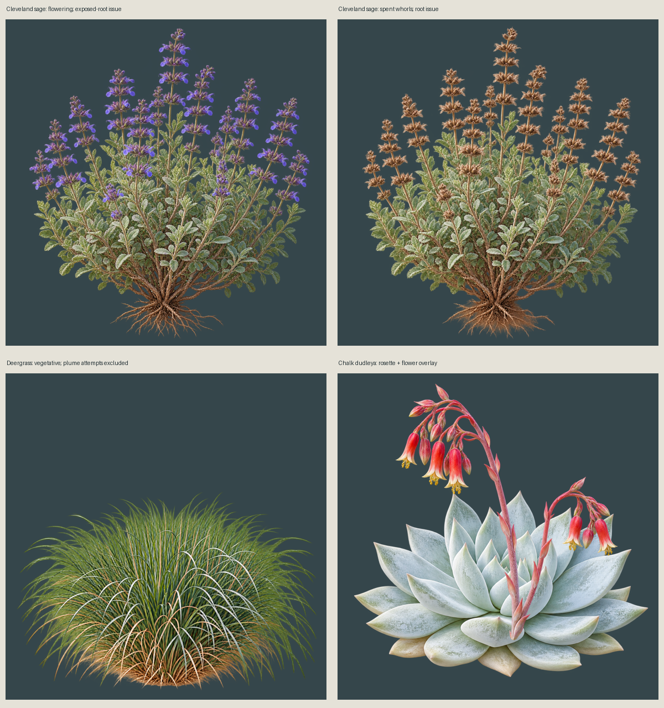

Candidate review only. Sage needs root cleanup; deergrass reproductive attempts were rejected; dudleya needs style and stalk-attachment review.

Static states only; no wind animation or runtime admission.